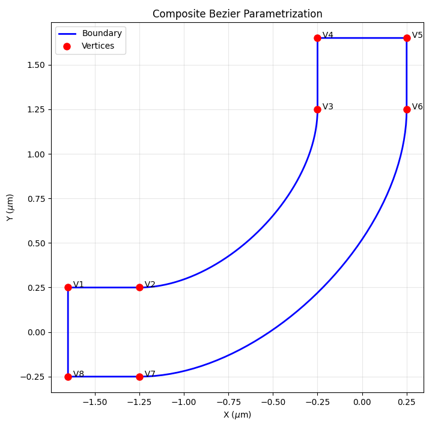
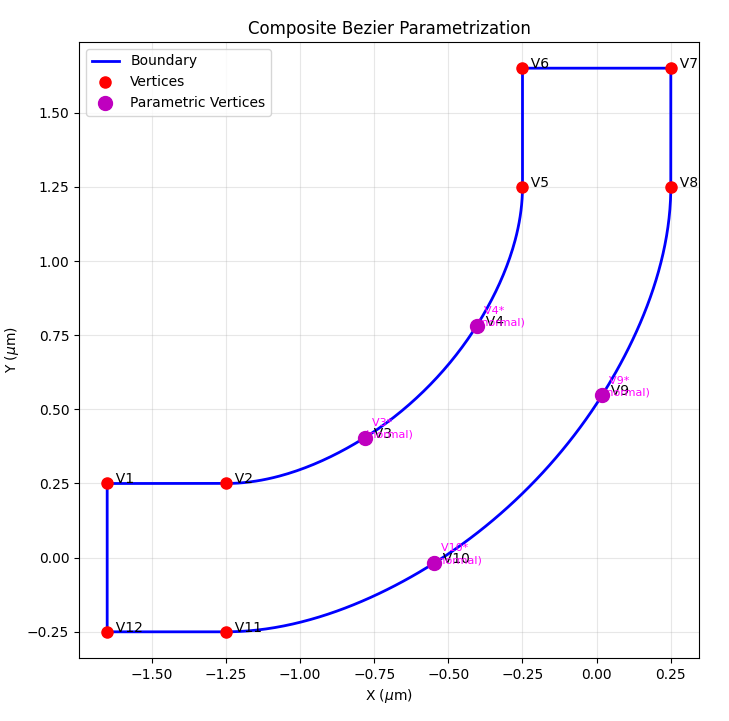
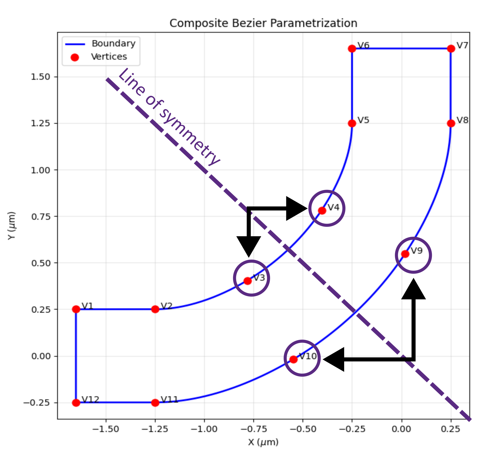

Parametrization#
Parametrization is the process of linking properties and geometry of the simulation to the optimization.
The lumopt2 module supports parametric optimization in two ways:
Parametrization object: maps optimization parameters to arbitrary Lumerical object properties.
Closed curve object: maps optimization parameters to a special class that defines a closed polygon.
Regardless of the parametrization type, you must first define the optimization region. Within this region, the parameters are adjusted.
Optimization region#
The optimization region defines the bounds within which the geometry of the simulations is varied during optimization. You must ensure that all permutations of the geometry variation stays within the optimization region you define.
To define an optimization region, use the Box class, which takes either the center and span, or min and max values in each dimension.
In the definition, you can additionally specify the grid resolution in each dimension using the dx, dy, dz arguments.
If you do not specify the grid resolution, the optimization region is set up with a default resolution determined by the mesh override simulation object.
1# Define an optimization region centered at the origin with a span of 1 micron in each
2# direction and a mesh size of 25 nm
3optimization_region = lmpt.Box(x_span = 1e-6, y_span = 1e-6, z_min = -1e-6, z_max = 1e-6,
4 dx = 0.025e-6, dy = 0.025e-6, dz = 0.025e-6)
Parametric optimization#
You can conduct parametric optimization using either the general-purpose Parametrization, or the specialized ClosedCurve class, which is designed for photonic integrated circuit applications.
Parametrization class#
The Parametrization class maps optimization parameters to arbitrary Lumerical object properties.
This approach is the most general way to parametrize a design in lumopt2, and is suitable for a wide range of applications.
For a simple example of setting parametric optimization, see the 3x3 pillar example in the getting started section.
Defining parameter mapping#
To use the parametric optimization approach, you must define a function that takes a parameter vector as input, and outputs a dictionary where the keys are the names of Lumerical object properties, and the values are elements in the parameter vector.
For example, to define a parametrization that links the radius of different cylinders in the simulation, use the following code.
1def my_parametrization(params):
2 '''Map 3 parameters to cylinder radii'''
3 return {
4 "cyl0::radius": params[0],
5 "cyl1::radius": params[1],
6 "cyl2::radius": params[2]
7 }
This effectively defines:
\(p_0\): radius of cylinder 0
\(p_1\): radius of cylinder 1
\(p_2\): radius of cylinder 2
Here, the Lumerical object properties are specified in the format object_name::property_name, or the more general group_name::object_name::property_name.
Typically, you can find the property using the GUI, or by using the getnamed command either through Lumerical scripting or Python by calling fdtd.getnamed("my_object_name").
You can also define more complex parameter mapping, as any differentiable function of the parameter vector is supported. For example, define a parametrization such that \(p_1\) is the difference between the radius of cylinder 1 and cylinder 0, and \(p_2\) is the difference between the radius of cylinder 2 and cylinder 1.
1def my_parametrization(params):
2 '''Map 3 parameters to cylinder radii'''
3 return {
4 "cyl0::radius": params[0],
5 "cyl1::radius": params[0] + params[1],
6 "cyl2::radius": params[0] + params[1] + params[2]
7 }
You can also map parameters to a vector property of an object, such as the vertices of a polygon object. The autograd numpy library is used here to ensure that autograd can compute the Jacobian of the parameter mapping function.
1def polygon_parametrization(params):
2 return {
3 f"poly{idx}::vertices": anp.array([[0, value], [value, 0],
4 [0, -value], [-value, 0]])
5 for idx, value in enumerate(params)}
6
7 }
Bounds and initial values#
The parameter mapping function and the optimization region is passed along with the bounds for each parameter and an optional vector of initial values to the Parametrization class.
The bounds are passed as a list of tuples with the same length of the parameter vector, each element containing the lower and upper bound for each parameter. The initial values are passed as a list of values with the same length of the parameter vector.
The following example illustrates the definition of bounds and initial values for the 3-cylinder example above.
Note
If the initial values are not provided, the optimization starts from the middle of the bounds by default.
1parametrization = lmpt.Parametrization(
2 func=mixed_parametrization,
3 bounds=[(50e-9, 200e-9)] * 3,
4 initial_params=[100e-9] * 3
5)
Functions not differentiable by autograd#
You can also define parameter mapping functions that autograd cannot track. In this case, you can set the use_jac property of the Parametrization object to False.
In this case, the class assumes that each optimization parameter affects all geometic objects in the optimization region, which may lead to less efficient gradient calculations.
1def nondiff_func_parametrization(params):
2 '''Map 5 parameters to cylinder radii using non-differentiable functions'''
3 return {
4 "cyl0::radius": nondiff_func1(params),
5 "cyl1::radius": nondiff_func2(params),
6 "cyl2::radius": nondiff_func3(params)
7 }
8
9parametrization = lmpt.Parametrization(
10 func=nondiff_func_parametrization,
11 bounds=[(50e-9, 200e-9)] * 5,
12 initial_params=[200e-9] * 5,
13 use_jac=False
14)
Closed curve class#
The ClosedCurve class defines a special type of parametric optimization that defines a closed Bézier polygon using a series of paths, each of which can be linear or cubic.
This approach is generally useful for photonic integrated circuit applications, where the design is readily transformed into a polygon on a 2-D plane. As seen in the sections below, you can also enforce symmetry in the design by linking control points to each other.
Closed curve base object#
To set up a closed curve optimization, you must first define the base geometry object using ClosedCurve.
The ClosedCurve class ingests a list of control points, index, and thickness information to define a waveguide-like structure.
When you set up the base geometry object, specify only the control points necessary for the geometry. Additional control points for optimization are added later in the process.
To specify the control point, use a list of Segment. Each element in the list corresponds to a control point in the curve, and definitions within the Segment element specifies the location of the segment and how it connects to the next segment.
For example, the following code defines a simple L-bend within an FDTD simulation region, with a width of 500nm and bend radius of 1 micron.
1bend_radius = 1.0e-6
2bend_start = wg_width/2+bend_radius
3dist_to_wall = 0.4e-6 # Distance from wall to start of the bend (lead waveguides)
4fdtd_min_x =-(bend_start + dist_to_wall)
5fdtd_max_x = 2*wg_width
6
7fdtd_min_y =-2*wg_width
8fdtd_max_y = bend_start + dist_to_wall
9
10path = [ Segment([ fdtd_min_x, wg_width/2], 'linear'), # Segment 1 - linear
11 Segment([-wg_width/2-bend_radius, wg_width/2], 'cubic'), # Segment 2 - cubic
12 Segment([-wg_width/2, wg_width/2+bend_radius], 'linear'), # Segment 3 - linear
13 Segment([-wg_width/2, fdtd_max_y], 'linear'), # Segment 4 - linear
14 Segment([ wg_width/2, fdtd_max_y], 'linear'), # Segment 5 - linear
15 Segment([ wg_width/2, wg_width/2+bend_radius], 'cubic'), # Segment 6 - linear
16 Segment([-wg_width/2-bend_radius, -wg_width/2], 'linear'), # Segment 7 - linear
17 Segment([ fdtd_min_x, -wg_width/2], 'linear'), # Segment 8 - cubic
18 ]
After defining the segments, set up the closed curve object by passing in the list of segments along with the optimization region, the waveguide index and the thickness of the waveguide.
1n_wg = 3.5 # Silicon waveguide
2wg_height = 0.22e-6 # 220nm height
3
4closed_curve = lmpt.ClosedCurve(path, optimization_region=optimization_region, index=n_wg, z_min=-wg_height/2.0, z_max= wg_height/2.0)
You can visualize the defined curve using ClosedCurve.plot() function.
1closed_curve.plot()
{kind=link}

Parametrize closed curves#
To parametrize the closed curve, you can use the Parametrize class, which adds additional control points along a segment so they can vary during optimization.
You specify the start index of a segment based on the path you defined earlier for the base curve, the number of control points, the bounds to apply to all new control points, and the degree of freedom for the new control points.
Note
The vertex index for the closed curve is 1-based.
After defining the parametrization, finalize the parametrization using ClosedCurve.make_segments_parametric().
1num_pts_per_curve = 2
2bounds = (-200e-9, 400e-9)
3segments_to_parametrize = [lmpt.Parametrize(segment_index=2, num_added_vertices=num_pts_per_curve, bounds=bounds, movement='normal'), # Outer sidewall
4 lmpt.Parametrize(segment_index=6, num_added_vertices=num_pts_per_curve, bounds=bounds, movement='normal')] # Inner sidewall
5closed_curve.make_segments_parametric(segments_to_parametrize)
Note
In the example above, the movement argument is set to “normal,” allowing the new control points to move normal to the curve. You can also set it to “x,” “y,” or “both” to specify the degree of freedom for the control points.
After defining the parametrized segments, you can also visualize the curve with the new control points using ClosedCurve.plot() function.
1closed_curve.plot()
{kind=link}

As seen in the visualization above, new vertices are added to the curve, and the original vertices numbers are shifted to account for the new vertices. The variable vertices are vertices V3, V4, V9, and V10.
Symmetric parametrization#
Sometimes, it is desirable to enforce symmetry in the design, such that certain control points move in relation to each other during optimization.
In this case, you must define a custom parametrization function that maps vertices to the same parameters using ClosedCurve.set_parametrization_function().
The custom parametrization function must directly act on a parameter array and link vertex numbers to the parameters, and return how each vertex of interest should move.
To achieve this, you can first manually split the segment into a desired number of control points using lumopt2.parametrization.closed_curve.EqualSplit, and create vertex parameters using lumopt2.parametrization.closed_curve.ParamVertex.
For example, the following code defines a custom parametrization function that enforces symmetry for the control points on the L-bend example above for a \(y=-x\) symmetry, by effectively mapping the movement of specific control points to the same parameters.
1num_pts_per_curve = 2 # Control vertices per curved segment
2num_free_per_curve = (num_pts_per_curve + 1) // 2 # Symmetry halves the DOF (rounded up so an odd middle vertex still counts once)
3num_params = 2 * num_free_per_curve # Two segments x free DOF per segment
4
5# Subdivide the segments
6
7split_result = closed_curve.split_segments([
8lmpt.EqualSplit(segment_index=2, num_added_vertices=num_pts_per_curve), # Outer sidewall
9lmpt.EqualSplit(segment_index=6, num_added_vertices=num_pts_per_curve), # Inner sidewall
10])
11
12vertices_seg2 = split_result[2]
13vertices_seg6 = split_result[6]
14
15# Define custom parametrization function
16
17def symmetric_parametrization(params):
18 return [ lmpt.ParamVertex(idx=3, value=params[0], movement='normal'),
19 lmpt.ParamVertex(idx=4, value=-params[0], movement='normal'),
20 lmpt.ParamVertex(idx=9, value=params[1], movement='normal'),
21 lmpt.ParamVertex(idx=10, value=-params[1], movement='normal'),
22 ]
23
24 # Define bounds and set custom parametrization function
25
26bounds = (-200e-9, 400e-9)
27closed_curve.set_parametrization_function(
28 func=symmetric_parametrization,
29 n_params=num_params,
30 bounds=bounds,
31)
The diagram below shows how the control points maps to each other in terms of movement.
{kind=link}

Combined parametrization#
If you have multiple parametrizations with the same optimization region, you can combine them into a single joint parametrization object using CombinedParametrization, which takes in a list of parametrization objects.
In this case, the parameter vectors are automatically concatenated between the different inputs.